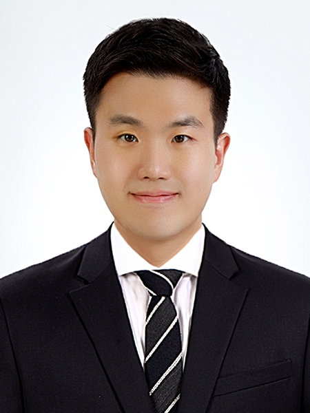

평범한 초, 중, 고등학교 생활을 했던 저는 고등학교 졸업 이후 대학을 진학하지 못했습니다. 하지만 학업의 열정을 놓지 못했던 저는 군 전역 후에 마침내 대학교에 입학하게 됐습니다. 고등학교 졸업 이후 곧바로 대학 진학이라는 평범한 선택의 길을 선택하지 못했던 저는 남들보다 빨리 선택에 대한 책임을 알게 됐고 남들은 보지 못하는 새로운 시각을 갖게 됐습니다. 저는 대학에 입학한 후 '인생에 한 번 뿐인 대학생활을 그냥 자격증 공부만 하다가 보낼 수 없지!'라는 생각을 가지고 대학생활을 시작했습니다. 그저 공부해서 학점 잘 받고 자격증을 따는 일반적인 학우들과는 시각이 달랐습니다. 생각이 달랐던 만큼 학우들이 일반적으로 하지 않았던 선택을 했습니다. 새로운 경험을 하기 위해 동아리에 가입했습니다. 또한 동아리 친구의 소개로 외국인 친구를 사귀고 여행도 다니며 잊지 못할 추억들을 쌓았습니다. 하지만 자유로운 학교생활을 하기 위해서는 돈이 필요했고 그래서 저는 제 행동에 책임지기 위해 대학 4년 동안 아르바트를 했습니다. 다양한 경험을 했던 대학 생활 중에서도 밴드 동아리에서 홍보를 기획하고 운영했던 경험은 제가 지원한 마케팅 분야에 재능이 있다는 사실을 깨닫게 해줬습니다. 홍보를 하기 위해서는 새로운 시각과 아이디어가 필요합니다. 남들과 다른 선택을 했고 새로운 시각을 얻게 된 경험들은 새로운 시각과 아이디어가 필요한 홍보마케팅 일과 조화를 이뤘고 긍정적인 효과를 얻을 수 있었습니다. 그래서 막연하지만 마케터라는 꿈을 꾸고 관련 서적, 정보를 찾고 공부했습니다. 이에 더해 크고 작은 대외활동들을 해내며 지금까지 마케터의 꿈을 꾸며 그 꿈을 위해 하나둘 성장하는 중입니다.

저는 성실하고 적응력이 좋다는 장점이 있습니다. 고등학교 3년 동안 지각, 결석한 적이 한 번도 없어서 3년 개근상을 탔습니다. 그리고 저는 대학교를 제가 자라온 인천이 아닌 경북 안동에서 다녔습니다. 아는 친구 하나 없고 학교를 남들보다 늦게 간 터라 적응하기가 쉽지 않았습니다. 하지만 제 특유의 적응력을 바탕으로 새로운 환경에 금세 적응하여 4년 동안 잊지 못할 대학 생활을 했습니다. 하지만 저는 끝매듭이 부족하다는 단점이 있습니다. 저는 오래전부터 제 단점을 잘 알고 있었기 때문에 이를 극복하기 위해 '유보하기 전략'을 썼습니다. 인천 청년 공간 기자단 활동을 하며 기사를 쓸 때마다 제출하기 전에 한 번 더 고민했습니다. '이게 최선일까?' 이 질문에 긍정적인 답변이 떠오르지 않으면 빨리 기사를 제출하고 싶은 욕구를 억누르고 '무조건' 펜을 놓았습니다. 그리고 시간이 지난 이후에 다시 기사를 보고 부족한 부분을 보충하는 '유보하기' 전략을 써서 기사를 끝맺었습니다. 이처럼 저는 무언가 일을 마무리해야 할 때가 오면 일단 그 일을 내려놓습니다. 그리고 객관적으로 볼 수 있는 시각을 가질 때까지 기다립니다. 객관적인 시각을 회복했을 때 그때 다시 일을 바라보고 끝매듭을 짓습니다. 그렇게 저는 끝매듭이 약하다는 제 약점을 보완하기 위해 '유보하기'라는 원칙을 세웠고 실천해나갔습니다.